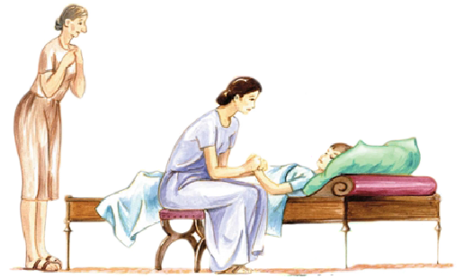

CORPVS HV́MANVM
I
Corpus hūmānum quattuor membra habet: duo bracchia et duo crūra. Bracchium membrum est et crūs membrum est. In bracchiō est manus, in crūre pēs. Duae manūs et duo pedēs in corpore hūmānō sunt.
In corpore ūnum caput est, nōn duo capita. In capite sunt oculī et aurēs, nāsus et ōs. Super caput capillus est. Capillus virōrum nōn tam longus est quam fēminārum. Suprā oculōs frōns est. Īnfrā oculōs genae sunt. Post frontem est cerebrum. Quī cerebrum parvum habet stultus est. Ōs est inter duo labra. In ōre lingua et dentēs īnsunt. Dentēs sunt albī ut margarītae. Lingua et labra rubra sunt ut rosae.
Hominēs oculīs vident et auribus audiunt. Homō quī oculōs bonōs habet bene videt, quī oculōs malōs habet male videt. Quī aurēs bonās habet bene audit, quī aurēs malās habet male audit. Syra male audit, ea enim aurēs malās habet.
Caput est super collum. Sub collō est pectus. In pectore cor et pulmōnēs sunt. In corde est sanguis, quī per vēnās ad cor fluit. Color sanguinis est ruber. Īnfrā pulmōnēs est iecur et venter. In ventre cibus est. Cor, pulmōnēs, iecur, venter sunt viscera hūmāna.
Homō quī ventrem malum habet cibum sūmere nōn potest, neque is sānus, sed aeger est. Homō sānus ventrem bonum, pulmōnēs bonōs, cor bonum habet.
Medicus ad hominem aegrum venit eumque sānum facit. Medicus est vir quī hominēs aegrōs sānat, sed multī aegrī ā medicō sānārī nōn possunt.

Estne sānus Quīntus? Nōn est: pēs eius aeger est. Puer super lectum iacet. Aemilia et Syra apud puerum aegrum sunt. Māter apud eum sedet manumque eius tenet. Syra nōn sedet, sed apud lectum stat. Quīntus iacet. Aemilia sedet. Syra stat.
Aemilia: “Ecce mālum, Quīnte.”
Aemilia puerō aegrō mālum rubrum dat, neque is mālum ēsse potest. Māter eī pōculum aquae dat.
Aemilia: “Bibe aquam modo!”
Māter caput Quīntī sustinet, dum puer aquam bibit.
Aemilia: “Iam dormī, Quīnte! Dormī bene!”
Māter manum pōnit in fronte fīliī: frontem eius tangit. Quīntus oculōs claudit atque dormit.
II
Iūlius, quī cum Syrō servō in ātriō est, imperat: “Ī ad oppidum, Syre, atque medicum arcesse!”
Medicus Tūsculī habitat. Iūlius servum suum Tūsculum īre iubet atque medicum arcessere. Syrus equum ascendit, ad oppidum it, medicum arcessit. Servus cum medicō ad vīllam revenit.
Medicus interrogat: “Quis aegrōtat?”
Iūlius: “Meus Quīntus fīlius aegrōtat; ambulāre nōn potest.”
Medicus: “Cūr ambulāre nōn potest?”
Iūlius: “Quia pēs eius aeger est. Puer stultus est, medice: nīdum in arbore reperit, arborem ascendit, dē arbore cadit! Itaque pedem aegrum habet nec ambulāre potest. Nec modo pede, sed etiam capite aeger est.”
Iūlius medicum ad cubiculum Quīntī dūcit. Medicus cubiculum intrat, ad lectum adit atque puerum aspicit. Quīntus quiētus super lectum iacet nec oculōs aperit. Medicus puerum dormīre videt.
Medicus dīcit: “Puer dormit.”
Syra, quae male audit, id quod medicus dīcit audīre nōn potest; itaque interrogat: “Quid dīcit medicus?”
Aemilia (in aurem Syrae): “Medicus ‘puerum dormīre’ dīcit.”
Quīntus oculōs aperit atque medicum adesse videt. Puer, quī medicum timet, nūllum verbum facere audet.
Medicus: “Ōs aperī, puer! Linguam ostende!”
Syra: “Quid dīcit medicus?”
Aemilia: “Medicus Quīntum ōs aperīre atque linguam ostendere iubet.”
Quīntus ōs aperit atque medicō linguam ostendit. Medicus linguam eius rubram esse videt.
Medicus: “Lingua eius rubra est.”
Syra: “Quid dīcit?”
Aemilia: “Dīcit ‘linguam eius rubram esse’.”
Medicus etiam dentēs Quīntī spectat et inter dentēs albōs ūnum nigrum videt. Nōn sānus est dēns quī colōrem nigrum habet.
Medicus: “Puer dentem aegrum habet.”
Quīntus: “Sed dēns nōn dolet; ergō dēns aeger nōn est. Pēs dolet — et caput.”
Syra: “Quid dīcunt?”
Aemilia: “Medicus dīcit ‘Quīntum dentem aegrum habēre’, et Quīntus dīcit ‘pedem et caput dolēre, nōn dentem’.”
Iūlius: “Nōn dentem, sed pedem modo sānā, medice!”
Medicus pedem Quīntī spectat atque digitum ad pedem appōnit: medicus pedem eius tangit. Puer digitum medicī in pede suō sentit.
Quīntus: “Ei, ei! Pēs dolet!”
III
Medicus (ad Iūlium): “Tenē bracchium puerī!” (ad Aemiliam) “Tenē pōculum sub bracchiō!” (ad Quīntum) “Claude oculōs, puer!” Medicus Quīntum oculōs claudere iubet, quod puer cultrum medicī timet.
Ecce medicus cultrum ad bracchium puerī appōnit. Perterritus Quīntus cultrum medicī sentit in bracchiō, nec oculōs aperīre audet. Capillī horrent. Cor palpitat. Medicus vēnam aperit. Ruber sanguis dē bracchiō in pōculum fluit. Quīntus sanguinem dē bracchiō fluere sentit atque horret. Frōns et genae albae sunt ut līlia...
Medicus puerum oculōs aperīre iubet: “Aperī oculōs, puer!” neque Quīntus oculōs aperit. Puer quiētus super lectum iacet ut mortuus.
Syra: “Cūr Quīntus oculōs nōn aperit? Ō deī bonī! Puer mortuus est!”
Quīntus autem spīrat, ergō mortuus nōn est. Sed Syra eum mortuum esse putat, quod eum spīrāre nōn audit. Iūlius et Aemilia fīlium suum quiētum spectant — atque tacent. Medicus manum super pectus puerī impōnit eumque spīrāre et cor eius palpitāre sentit. Medicus: “Puer spīrat et cor eius palpitat.”
Aemilia gaudet quod fīlius vīvit.
Syra: “Quid dīcit medicus?”
Aemilia: “Medicus dīcit ‘Quīntum spīrāre et cor eius palpitāre’. Ergō Quīntus vīvit.”
Syra Quīntum vīvere gaudet.
Aemilia sanguinem dē bracchiō fīliī dēterget. Iam puer oculōs aperit.
Quīntus: “Ei! Dolet bracchium!”
Māter fīlium vīvum esse videt et audit.
Aemilia imperat: “Aquam arcesse, Syra!” neque ancilla verba dominae audit.
Iūlius: “Domina tē aquam arcessere iubet, Syra!”
Syra abit, atque revenit cum aliō pōculō aquae plēnō. Aemilia pōculum tenet, dum Quīntus bibit.
Medicus: “Iam necesse est puerum dormīre.”
Exit medicus. Quīntus, quī medicum horret, eum abesse gaudet.
Iūlius: “Iam fīlius noster nōn modo pede, sed etiam bracchiō aeger est.”
Aemilia: “Ille medicus crassus fīlium nostrum sānāre nōn potest.” Aemilia nōn putat medicum puerum aegrum sānāre posse.
Syra: “Stultus est medicus! Neque cor neque cerebrum habet!”
Syra ‘medicum stultum esse’ dīcit. Iūlius et Aemilia eum stultum esse putant, nōn dīcunt.
* * *
GRAMMATICA LATÍNA
Dēclīnātiō tertia
Mascuīnum et fēminīnum.
Vocābula masculīna: pāstor, mercātor, clāmor, timor, color, sōl, āēr, venter, leō, pulmō, homō, pēs, sanguis; pānis, collis, piscis, mōns, dēns, cēt.
Vocābula fēminīna: ovis, vallis, avis, auris, nūbēs, frōns; arbor, vōx, praepositiō, dēclīnātiō, cēt.
Neutrum.
Vocābula neutra: flūmen, ōs, crūs, corpus, pectus, iecur, caput, cor; viscera (pl); mare, animal, cēt.
Plūrālis: -a. Accūsātīvus = nōminātīvus.
‘Corpus’ et ‘flūmen’ dēclīnantur hōc modō:
Sing. Plūr. Sing. Plūr.
Nom. corpus corpor|a flūmen flūmin|a
Acc. corpus corpor|a flūmen flūmin|a
Gen. corpor|is corpor|um flūmin|is flūmin|um
Dat. corpor|ī corpor|ibus flūmin|ī flūmin|ibus
Abl. corpor|e corpor|ibus flūmin|e flūmin|ibus
Ut ‘corpus’ dēclīnantur: pectus -or|is, ōs ōr|is, crūs crūr|is, iecur -or|is (cor cord|is, caput -it|is); plūrālis: viscer|a -um. ‘Mare’ et ‘animal’ hōc modō dēclīnantur:
Sing. Plūr. Sing. Plūr.
Nom. mar|e mar|ia animal animāl|ia
Acc. mar|e mar|ia animal animāl|ia
Gen. mar|is mar|ium animāl|is animāl|ium
Dat. mar|ī mar|ibus animāl|ī animāl|ibus
Abl. mar|ī mar|ibus animāl|ī animāl|ibus
Accūsātīvus cum īnfīnītīvō
Iūlia dormit. Syra Iūliam dormīre videt.
Syra: “Iūlia dormit.” Syra ‘Iūliam dormīre’ dīcit.
‘Iūliam dormīre’ est accūsātīvus cum īnfīnītīvō. Accūsātīvus cum īnfīnītīvō pōnitur apud multa verba:
[1] vidēre, audīre, sentīre: Puer medicum adesse videt. Puerī Iūliam canere audiunt. Medicus puerum spīrāre sentit.
[2] iubēre: Dominus servum discēdere iubet.
[3] dīcere: Quīntus ‘pedem dolēre’ dīcit.
[4] putāre: Syra Quīntum mortuum esse putat.
[5] gaudēre: Aemilia fīlium vīvere gaudet.
[6] necesse esse: Puerum dormīre necesse est.